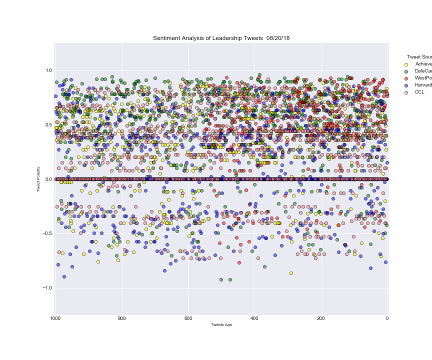

Twitter Leadership Training Sentiment Analysis
This project is about getting how twitter-verse feels about the different leadership training
being offered by various companies. Some leadership trainings are from Harvard, Yale,e etc.
Tweets were analyzed using VaderSentiment, a Python library. The different level of Sentiments are
Positive, Neutral, Negative, and Compound. Compound is a combination of the other three. Enjoy the graphs!
